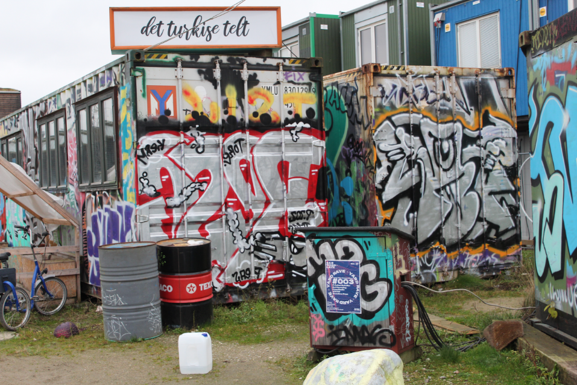
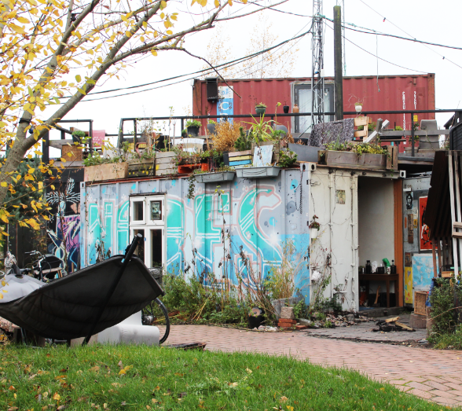
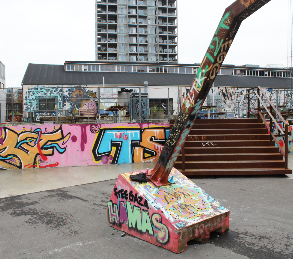
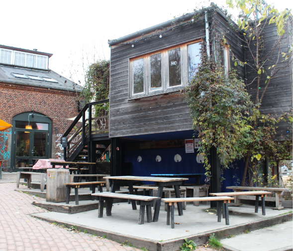
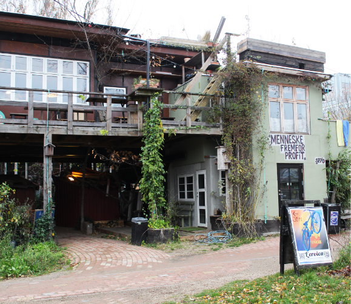
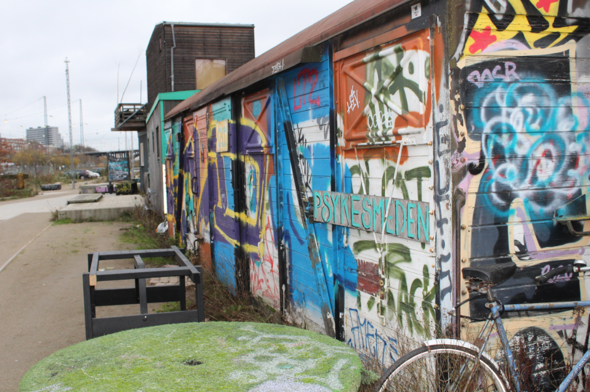

Godsbanearealerne
Godsbanearealerne is a part of Aarhus that used to
be used for freight trains but was abandoned. Now it
is a cultural-historical gem located in the heart of
Aarhus. An area characterized by its scenic location
at the bottom of the Aarhus Ådal and shaped by
human activity over the centuries.

and entrepreneurs. There are old building,
containers and treehouses decorated with all kinds
of things. A lot of the containers are covered with
graffiti, but you can tell that most of it is done by
artistic people, and they were not trying to ruin the
buildings, but simply trying to add a touch of art.




preserve the old industrial part of Aarhus while
at the same time giving it a new life.
